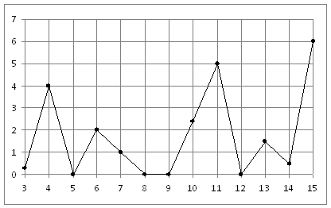

|
На рисунке жирными точками показано суточное количество осадков, выпадавших в Казани с 3 по 15 февраля 1909 года. По горизонтали указываются числа месяца, по вертикали — количество осадков, выпавших в соответствующий день, в миллиметрах. Для наглядности жирные точки на рисунке соединены линией. Определите по рисунку, какого числа впервые выпало 5 миллиметров осадков.

|